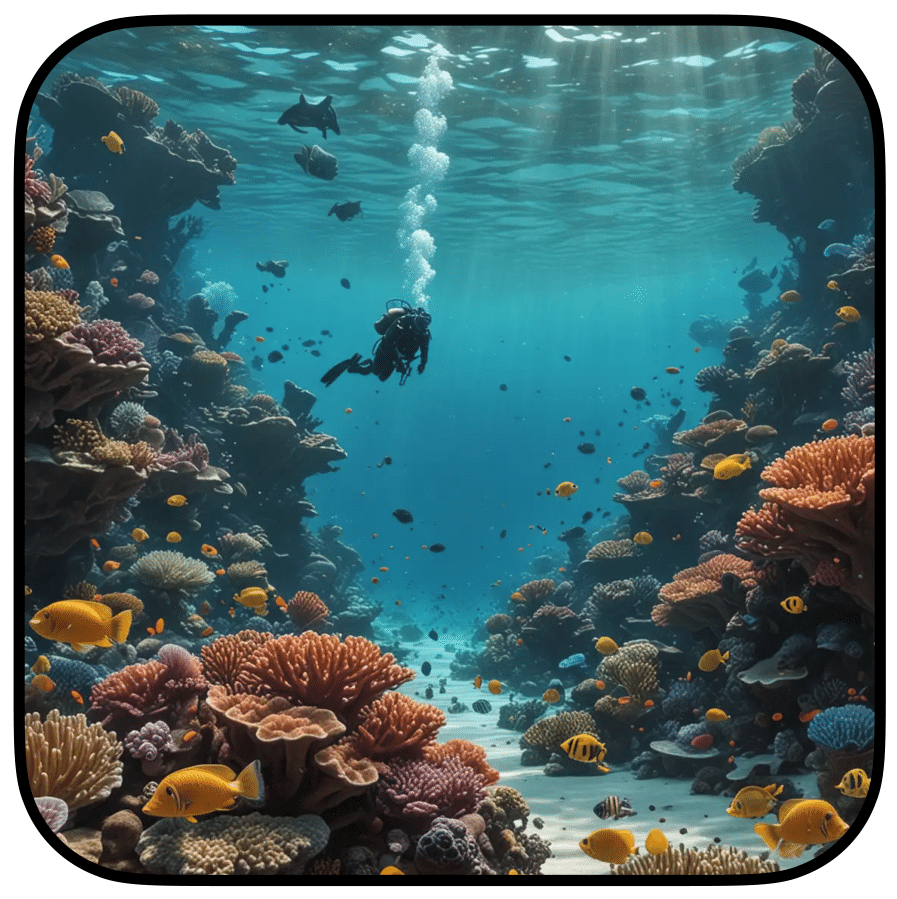

Abstract: Ecological state shifts that alter the structure and function of entire ecosystems are a concerning consequence of human impact. Yet, when, where, and why discrete ecological states emerge remains difficult to predict and monitor, especially in high-diversity systems. We sought to quantify state shifts and their drivers through space and time in the most ecologically-complex marine ecosystem: tropical coral reefs. Using a global dataset of 3,375 coral reef surveys, along with thirteen time series datasets ranging between 1987 and 2019, we applied a novel double-dichotomy approach to classify coral reefs into four simplified and discrete states based on the relative contributions of corals vs. algae to benthic cover and small-bodied vs. large-bodied fishes to fish standing stock. We then examined state shifts considering a range of spatial predictors and tested whether states have shifted directionally over time, and the nature of the most common transitions. We show that geographic, environmental, and anthropogenic context fundamentally shapes coral reef states at the local scale, which explains disparities among case studies, and stakes out critical baseline expectations for regional management efforts. We also reveal clear multi-decadal state shifts on coral reefs: over time, systems dominated by reef-building corals and small-bodied, planktivorous fishes tend to have been replaced with reefs characterized by algae and larger-bodied fishes. Our results suggest a previously unrecognized transition from systems that harness external subsidies through small-bodied consumers associated with structurally-complex live corals, to herbivore-dominated systems with stronger bottom-up dynamics. Overall, the partitioning of complex reef ecosystems into a small suite of discrete ecological states suggests that spatial context-dependency, shifting baselines, and changes in reef functioning are crucial considerations for coral reef management in the 21st century.